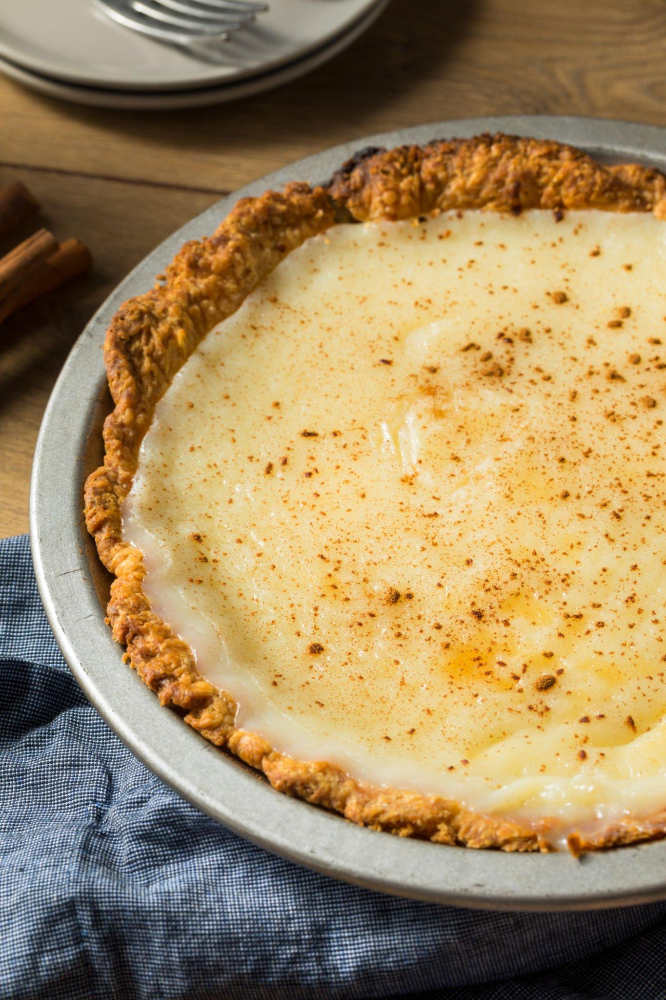

Ingredients
For the Pie Crust
1 1/4 cups all-purpose flour
1/2 cup unsalted butter, chilled and diced
1/4 cup granulated sugar
1/4 teaspoon salt
3-4 tablespoons ice water
For the Filling
1 cup granulated sugar
1/4 cup all-purpose flour
1/4 teaspoon salt
2 cups heavy cream
1 teaspoon vanilla extract
2 tablespoons unsalted butter, melted

Instructions
1. Prepare the Pie Crust
In a food processor, combine the flour, sugar, and salt.
Add the chilled, diced butter and pulse until the mixture resembles coarse crumbs.
Gradually add ice water, 1 tablespoon at a time, and pulse until the dough comes together.
. Gather the dough, shape it into a disc, wrap it in plastic wrap, and refrigerate for at least 30 minutes.
2.Preheat the Oven
Preheat your oven to 375°F (190°C).
3.Roll Out the Pie Crust
On a lightly floured surface, roll out the chilled pie crust to fit a 9-inch pie dish.
Press the crust into the pie dish, trim any excess, and crimp the edges.
4.Blind Bake the Crust
Line the pie crust with parchment paper and fill it with pie weights or dried beans.
Bake for 15 minutes. Remove the weights and parchment paper, then bake for an additional 5 minutes or until the crust is lightly golden. Let it cool.
5.Prepare the Filling
In a mixing bowl, whisk together sugar, flour, and salt.
Gradually add the heavy cream, whisking continuously to avoid lumps.
Stir in the vanilla extract and melted butter.
6.Bake the Pie
Pour the filling into the pre-baked pie crust.
7.Bake
Bake the pie at 375°F (190°C) for 45-50 minutes or until the center is set and the top is golden brown.
8.Cool and Serve
Allow the pie to cool completely before slicing. You can refrigerate it for a few hours to enhance the flavors.
Enjoy your delicious sugar cream pie!😋